SG-SLAM: A Real-Time RGB-D Visual SLAM Toward Dynamic Scenes With Semantic and Geometric Information
Shuhong Cheng , Changhe Sun , Shijun Zhang , Student Member, IEEE, and Dianfan Zhang
Abstract— Simultaneous localization and mapping (SLAM) is one of the fundamental capabilities for intelligent mobile robots to perform state estimation in unknown environments. However, most visual SLAM systems rely on the static scene assumption and consequently have severely reduced accuracy and robustness in dynamic scenes. Moreover, the metric maps constructed by many systems lack semantic information, so the robots cannot understand their surroundings at a human cognitive level. In this article, we propose SG-SLAM, which is a real-time RGB-D semantic visual SLAM system based on the ORB-SLAM2 framework. First, SG-SLAM adds two new parallel threads: an object detecting thread to obtain 2-D semantic information and a semantic mapping thread. Then, a fast dynamic feature rejection algorithm combining semantic and geometric information is added to the tracking thread. Finally, they are published to the robot operating system (ROS) system for visualization after generating 3-D point clouds and 3-D semantic objects in the semantic mapping thread. We performed an experimental evaluation on the TUM dataset, the Bonn dataset, and the OpenLORIS-Scene dataset. The results show that SG-SLAM is not only one of the most real-time, accurate, and robust systems in dynamic scenes but also allows the creation of intuitive semantic metric maps.
Index Terms— Dynamic scenes, geometric constraint, semantic metric map, visual-based measurement, visual simultaneous localization and mapping (SLAM).
I. INTRODUCTION
IMULTANEOUS localization and mapping (SLAM) has S an important role in the state perception of mobile robots. It can help a robot in an unknown environment with an unknown pose to incrementally build a globally consistent map and simultaneously measure its pose in this map [1]. Due to continuing and rapid development of cameras and computing systems, we have access to cheaper, faster, higher quality, and smaller vision-based sensors. It also helps vision-based measurement (VBM) become more ubiquitous and applicable [2]. Hence, in the past years, a large number of excellent visual SLAM systems have emerged, such as PTAM [3], ORB-SLAM2 [4], DVO [5], and Kimera [6]. Some of these visual SLAM systems are quite mature and have achieved good performance under certain specific environmental conditions.
As SLAM enters the age of robust perception [7], the system has higher requirements in terms of robustness and high-level understanding characteristics. However, many visual-based classical SLAM systems still fall short of these requirements in some practical scenarios. On the one hand, most visual SLAM systems work based on the static scene assumption, which makes the system less accurate and less robust in real dynamic scenes (e.g., scenes containing walking people and moving vehicles). On the other hand, most existing SLAM systems only construct a globally consistent metric map of the robot’s working environment [8]. However, the metric map does not help the robot to understand its surroundings at a higher semantic level.
Most visual SLAM algorithms rely on the static scene assumption, which is why the presence of dynamic objects can cause these algorithms to produce the wrong data correlation. These outliers obtained from dynamic objects can seriously impair the accuracy and stability of the algorithms. Even though these algorithms show superior performance in some specific scenarios, it is difficult to extend them to actual production and living scenarios containing dynamic objects. Some recent works, such as [9], [10], [11], and [12], have used methods that combine geometric and semantic information to eliminate the adverse effects of dynamic objects. These algorithms mainly using deep learning have significant improvements in experimental accuracy, but they suffer from shortcomings in scene generalizability or real time due to various factors. Therefore, how skillfully detecting and processing dynamic objects in the scene is crucial for the system to operate accurately, robustly, and in real time.
Traditional SLAM systems construct only a sparse metric map [3], [4]. This metric map consists of simple geometries (points, lines, and surfaces) and every pose is strictly related to the global coordinate system. Enabling a robot to perform advanced tasks with intuitive human–robot interaction requires it to understand its surroundings at a human cognitive level. However, the metric map lacks the necessary semantic information and therefore cannot provide this capability. With the rapid development of deep learning in recent years, some neural networks can effectively capture the semantic information in the scenes. Therefore, the metric map can be extended to the semantic metric map by integrating semantic information. The semantic information contained in the semantic metric map can provide the robot with the capability to understand its surroundings at a higher level.
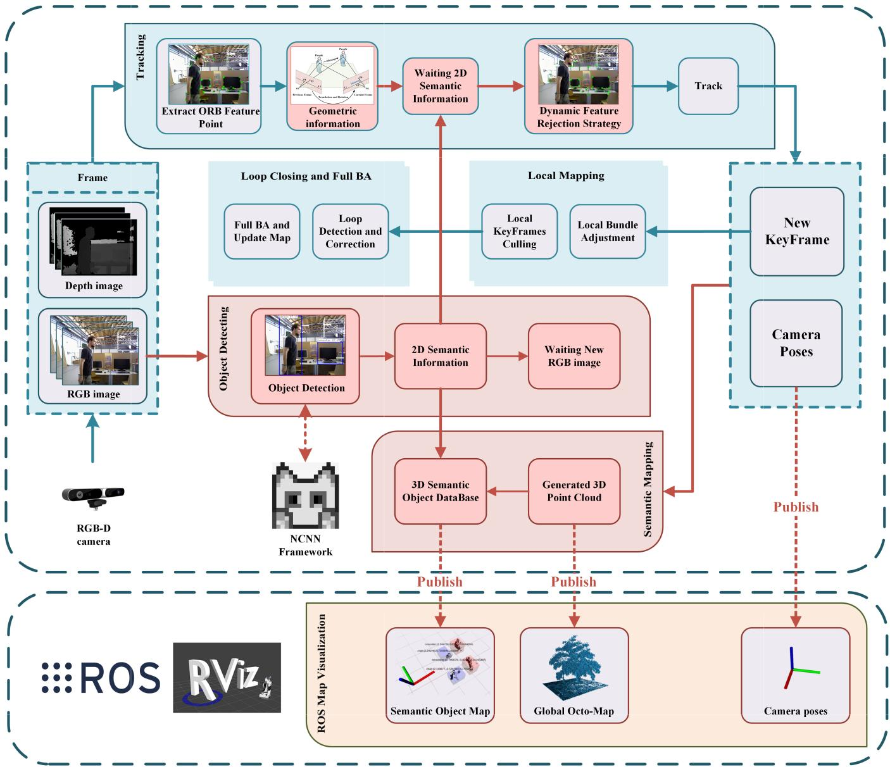
Fig. 1. Overview of the framework of the SG-SLAM system. The original work of ORB-SLAM2 is presented on an aqua-green background, while our main new or modified work is presented on a red background.
This article focuses on a dynamic feature rejection algorithm that integrates semantic and geometric information, which not only significantly improves the accuracy of system localization but also has excellent computational efficiency. Thus, our algorithm is very useful from an instrumentation and measurement point of view [2]. This article also focuses on how to construct the semantic metric map to improve the perceptual level of the robot to understand the surrounding scenes. The overall framework of the SG-SLAM system is shown in Fig. 1.
The main contributions of this article include the following.
1) A complete real-time RGB-D visual SLAM system called SG-SLAM is proposed using ORB-SLAM2 as a framework. Compared to ORB-SLAM2, it has higher accuracy and robustness in dynamic scenes and can publish a semantic metric map through the robot operating system (ROS) system [13].
2) A fast dynamic feature rejection algorithm is proposed by combining geometric information and semantic information. The geometric information is calculated from the epipolar constraint between image frames. Also, the semantic information about dynamic objects is obtained through an NCNN-based [14] object detection network in a new thread. The algorithm speed is greatly improved by appropriate modifications and a combination of classical methods while maintaining accuracy.
3) An independent semantic metric mapping thread that can generate semantic objects and Octo maps [15] using the
ROS interface is embedded in SG-SLAM. These maps can be useful in subsequent localization, navigation, and object capture tasks.
The remaining sections of this article are organized as follows. The work related to this system is described in Section II. Section III shows the details related to the implementation of this system. Section IV provides an experimental evaluation and analysis of the results. The conclusions and future works of this article are presented in Section V.
II. RELATED WORKS
A. SLAM in Dynamic Scenes
Most current visual SLAMs assume that the working scene is static and rigid. When these systems work in dynamic scenes, erroneous data associations due to the static scene assumption can seriously weaken the accuracy and stability of the system. The presence of dynamic objects in the scene makes all features divided into two categories: static features and dynamic features. How to detect and reject dynamic features is the key to the problem solution. The previous research work can be divided into three categories: geometric information method, semantic information method, and method combining geometric and semantic information.
Geometric information method, whose main idea is to assume that only static features can satisfy the geometric constraints of the algorithm. A remarkable early monocular dynamic object detection system comes from the work of Kundu et al. [16]. The system creates two geometric constraints to detect dynamic objects based on the multiview geometry [17]. One of the most important is the epipolar constraint defined by the fundamental matrix. The idea is that a static feature point in the current image must lie on the pole line corresponding to the same feature point in the previous image. A feature point is considered dynamic if its distance from the corresponding polar line exceeds an empirical threshold. The fundamental matrix of the system is calculated with the help of an odometer. In a purely visual system, the fundamental matrix can be calculated by the seven-point method based on RANSAC [18]. The algorithm of Kundu et al. [16] has the advantages of fast speed and strong scene generalization. However, it lacks a high-level understanding of the scene, so the empirical threshold is difficult to select and the accuracy is not high. In addition, some works use the direct method for motion detection of scenes, such as [19], [20], [21], and [22]. The direct method algorithms are faster and can utilize more image information. However, it is less robust in complex environments because it is based on the gray-scale invariance assumption.
Semantic information method, whose main idea is brutally rejecting features in dynamic regions that are obtained a priori using deep learning techniques. Zhang et al. [23] used the YOLO [24] object detection method to obtain the semantic information of dynamic objects in the working scene and then reject the dynamic feature points based on the semantic information to improve the accuracy of the system. However, the way YOLO extracts semantic information by bounding box will cause a part of static feature points to be wrongly regarded as outliers and eliminated. Similarly, Dynamic-SLAM proposed by Xiao et al. [25] has the same problem of directly rejecting all features within the bounding box. Liu and Miura [26] adopted a semantic segmentation method to detect dynamic objects and remove outliers in keyframes. The semantic segmentation method solves the problem of wrong recognition due to bounding boxes to a certain extent. However, the semantic information method relies heavily on the quality of the neural network, so it is difficult to meet the requirements of speed and accuracy at the same time.
Recently, much work has taken on the method of combining geometric and semantic information. For the RGB-D camera, Bescos et al. [9] used the semantic segmentation results of Mask R-CNN [27] combined with multiview geometry to detect dynamic objects and reject outliers. Yu et al. [10] used an optical flow-based moving consistency check method to detect all feature points and simultaneously performed semantic segmentation of the image using SegNet [28] in an independent thread. If the moving consistency checking method detects more than a certain percentage of dynamic points within the range of the human object, all feature points that lie inside the object are directly rejected. Wu et al. [11] used YOLO to detect a priori dynamic objects in the scene and then combined it with the depth-RANSAC method to reject the feature points inside the range of dynamic objects. Chang et al. [12] segmented the dynamic objects by YOLACT and then removed the outliers inside the objects. Then, geometric constraints are introduced to further filter the missing dynamic points.
The above methods have achieved quite good results in terms of accuracy improvement. Nevertheless, the idea of all these methods relies heavily on semantic information and, to a lesser extent, on geometric information. Thus, more or less all of them have the following shortcomings.
1) Inability to correctly handle dynamic features outside of the prior object [10], [11], [23], [25], [26]. For example, chairs are static objects by default, but dynamic during being moved by a person; moving cats appear in the scene, while the neural network is not trained on the category of cats; low recall problem for the detection algorithm.
2) The a priori dynamic object remains stationary yet still brutally rejects the feature points in its range, resulting in less available association data [11], [12], [23], [25], [26]. For example, a person who is sitting still is nevertheless considered a dynamic object.
3) The real-time performance is weak [9], [10], [11], [12]. The average frame rate of the system is low due to factors such as complex semantic segmentation networks or unreasonable system architecture.
We propose an efficient dynamic feature rejection algorithm combining geometric and semantic information to solve the above problem. Unlike most current work that relies heavily on deep learning, our algorithm uses mainly geometric information and then supplements it with semantic information. This shift in thinking allows our algorithm to avoid the shortcomings associated with relying too much on deep learning.
B. Semantic Mapping
Many current visual SLAMs only provide a metric map that only satisfies the basic functions of localization and navigation of mobile robots, such as the sparse feature point map constructed by ORB-SLAM2. If a mobile robot is to perceive its surroundings at the human conceptual level, it is necessary to incorporate semantic information in the metric map to form a semantic map. The semantic metric map can help robots to act according to human rules, execute high-level tasks, and communicate with humans at the conceptual level.
In an earlier study, Mozos et al. [29] used the hidden Markov model to partition the metric map into different functional locations (rooms, corridors, and doorways). The work of Nieto-Granda et al. [30] deployed a mapping module based on the Rao–Blackwellized particle filtering technique on a ROS [13] and used the Gaussian model to partition the map into marked semantic regions. Subsequently, the development of deep learning has greatly contributed to the advancement of object detection and semantic segmentation algorithms. Sünderhauf et al. [31] used SSD [32] to detect objects in each RGB keyframe and then assign a 3-D point cloud to each object using an adaptive 3-D unsupervised segmentation method. This work is based on the data association mechanism of ICP-like matching scores to decide whether to create new objects in the semantic map or to associate them with existing objects. Zhang et al. [23] acquired semantic maps of the working scene through the YOLO object detection module and localization module in the RGB-D SLAM system. In summary, many works only stop at using SLAM to help with semantic mapping and do not fully utilize the acquired semantic information to help to track. DS-SLAM, a semantic mapping system proposed by Yu et al. [10], adopted semantic segmentation information to build semantic maps. However, DS-SLAM only simply attaches semantic labels to the metric map for visual display. The lack of position coordinates for the objects described in mathematical form limits the system’s ability to perform advanced task planning.
III. SYSTEM OVERVIEW
In this section, we will introduce the technical details of the SG-SLAM system from five aspects. First, we introduce the framework and the basic flow of the system. Second, we give information about the object detecting thread. Then, the geometric principle of the epipolar constraint method for judging dynamic features is illustrated. Subsequently, the dynamic feature rejection strategy is proposed. Finally, we propose methods to acquire semantic objects and build semantic maps.
A. System Framework
The SG-SLAM proposed in this article is developed based on the ORB-SLAM2 system, which is a feature point-based classical visual SLAM system. ORB-SLAM2 consists of three main parallel threads: tracking, local mapping, and loop closing. With the evaluation of many popular public datasets, ORB-SLAM2 is one of the systems that achieve the state-ofthe-art accuracy. Therefore, SG-SLAM selects ORB-SLAM as the base framework to provide global localization and mapping functions.
As shown in Fig. 1, the SG-SLAM system adds two more parallel threads: the object detecting thread and the semantic mapping thread. Multithreading mechanism improves the system operation efficiency. The purpose of adding an object detecting thread is to use the neural network to obtain the 2-D semantic information. This 2-D semantic information then provides a priori dynamic object information for the dynamic feature rejection strategy. The semantic mapping thread integrates the 2-D semantic information and 3-D point cloud information from keyframes to generate a 3-D semantic object database. An intuitive semantic metric map is obtained by publishing the 3-D point cloud, 3-D semantic objects, and camera pose to the ROS system. The semantic metric maps can help mobile robots understand their surroundings and perform advanced tasks from a higher cognitive level compared to the sparse feature point maps of ORB-SLAM2.
When the SG-SLAM system is running, the image frames captured from the RGB-D camera are first fed together to the tracking thread and the object detecting thread. The object detecting thread starts to perform object recognition on the input RGB images. At the same time, the tracking thread also starts to extract ORB feature points from the input frames. After the extraction is completed, the iterative Lucas–Kanade optical flow method with pyramids is used to match the sparse feature points between the current frame and previous frames. Then, the seven-point method based on RANSAC is used to compute the fundamental matrix between the two frames. This reduces the adverse effects due to incorrect data correlation in dynamic regions. Compared with feature extraction and fundamental matrix computation, the object detection task is more time-consuming. In other words, when the fundamental matrix is computed, the tracking thread needs to wait for the result of the object detecting thread. Since the tracking thread adopts object detection rather than semantic segmentation, the blocking time is not too long [26]. This enhances the real-time performance of the system. Next, the tracking thread combines the epipolar constraint and 2-D semantic information to reject the dynamic feature points. The camera pose is computed and released to ROS according to the remaining static feature points.
The new keyframes are fed into the local mapping thread and the loop closing thread for pose optimization, which is the same as the original ORB-SLAM2 system. The difference is that the depth image of the new keyframe is used to generate a 3-D point cloud in the semantic mapping thread. Next, the 3-D point cloud is combined with the 2-D semantic information to generate a 3-D semantic object database. There are problems such as high computational effort and redundant information between normal frames in semantic map construction. Thus, the practice of processing only keyframe data here improves the efficiency of mapping. The reuse of 2-D semantic information also improves the real-time performance of the system. Finally, the 3-D point cloud and the 3-D semantic object data are published to the 3-D visualization tool Rviz for map display using the interface of the ROS system.
The adoption of object detection networks (rather than semantic segmentation), multithreading, keyframe-based mapping, and data reuse mechanisms overcomes the real-time performance shortcomings listed in Section II-A.
B. Object Detection
Due to the limitations in battery life, mobile robots generally choose ARM architecture processors with high performance per watt. NCNN is a high-performance neural network inference computing framework optimized for mobile platforms since NCNN is implemented in pure C with no third-party dependencies and can be easily integrated into SLAM systems. Thus, we choose it as the base framework for object detecting thread.
Many SLAM systems, such as [9], [10], [11], and [12], run slowly due to complex semantic segmentation networks or unreasonable system architectures. SLAM, as a fundamental component for state estimation of mobile robots, only has the good real-time performance to ensure the smooth operation of upper level tasks. To improve the object detection speed as much as possible, the single-shot multibox detector SSD is chosen as the detection head. In addition, we use MobileNetV3 [33] as a drop-in replacement for the backbone feature extractor in SSDLite. Finally, the network was trained using the PASCAL VOC 2007 Dataset [34].
In reality, other detectors can be used flexibly depending on the hardware performance to achieve a balance between accuracy and speed.
C. Epipolar Constraints
SG-SLAM uses geometric information obtained from epipolar constraint to determine whether feature points are dynamic or not. The judgment pipeline of the epipolar constraint is very straightforward. First, match the ORB feature points of two consecutive frames. Next, solve the fundamental matrix. Finally, the distance is calculated between the feature point of the current frame and its corresponding polar line. The bigger the distance is, the more likely the feature point is dynamic.
To solve the fundamental matrix, it is necessary to have the correct data association between the feature points. However, the purpose of solving the fundamental matrix is to judge whether the data association is correct or not. This becomes a classic chicken or the egg problem. ORB-SLAM2 takes the Bag-of-Words method to accelerate feature matching, and the continued use of this method cannot eliminate the adverse effect of outliers. Hence, to obtain a relatively accurate fundamental matrix, SG-SLAM uses the pyramidal iterative Lucas-Kanade optical flow method to calculate the matching point set of features. Inspired by Yu et al. [10], the matching point pairs located at the edges of images and with excessive differences in appearance are then removed to further reduce erroneous data associations. Then, the seven-point method based on RANSAC is used to calculate the fundamental matrix between two frames. In general, the proportion of dynamic regions is relatively small compared to the whole image. Thus, the RANSAC algorithm can effectively reduce the adverse effects of wrong data association in dynamic regions.
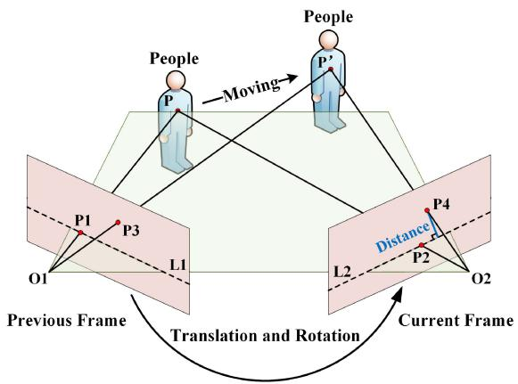
Fig. 2. Epipolar constraints.
According to the pinhole camera model, as shown in Fig. 2, the camera observes the same spatial point P from different angles. and denote the optical centers of the camera. and are the matching feature points of the spatial point maps in the previous frame and the current frame, respectively. The short dashed lines and are the epipolar lines in the frame. The homogeneous coordinate forms of and are denoted as follows
where x and y denote the coordinate values of the feature points in the image pixel coordinate system. Then, the polar line in the current frame can be calculated from the fundamental matrix (denoted as with the equation as follows
where X, Y, and represent the line vectors. According to [16], the epipolar constraint can be formulated as follows
Next, the distance between the feature point and the corresponding polar line is defined as the offset distance, denoted by the symbol d. The offset distance can be described as follows:
If the point is a static space point, jointly with (3) and (4), the offset distance of the point is
Equation (5) demonstrates that in the ideal case, the feature point in the current frame falls exactly on the polar line In reality, however, the offset distance is generally greater than zero but below an empirical threshold due to the influence of various types of noise.
Algorithm 1 Dynamic Feature Rejection Strategy
Input: Previous frame, Current frame, Previous frame’s feature points, Current frame’s feature points,
Standard empirical thresholds,
Output: The set of static feature points in the current frame’s feature points,
1: P CalcOpticalFlowPyrLK( F , F , P )
2: Remove matched pairs that are located at the edges and have too much variation in appearance
3: FundmentalMatrix FindFundamentalMat( -point method based on RANSAC)
4: for each matched pair in do:
5: if (DynamicObjectsExist && IsInDynamicRegion then
6: if (CalcEpiLineDistance , , FundmentalMatrix) GetDynamicWeightValue then
7: Append to S
8: end if
9: else
10: if(CalcEpiLineDistance , , FundmentalMatrix) then
11: Append to S
12: end if
13: end if
14: end for
If the point is not a static spatial point, as shown in Fig. 2, when the camera moves from the previous frame to the current frame, the point P also moves to . In this case, the point is matched with the point mapped from to the current frame. If point P moves without degeneration [16], then in general, the offset distance of is greater than the threshold ε. In other words, the feature points can be judged as dynamic or not by comparing the offset distance with the empirical threshold ε.
D. Dynamic Feature Rejection Strategy
To avoid the shortcomings of relying heavily on deep learning for dynamic feature judgment, our algorithm relies mainly on geometric information. The geometric information method judges whether a feature is dynamic by comparing the offset distance d with an empirical threshold ε. However, the threshold ε value is very difficult to set [12]: setting it too small will make many static feature points wrongly judged as dynamic points and setting it too large will miss many true dynamic feature points. This is because the purely geometric method cannot understand the scene at the semantic level and can only mechanically process all feature points using a fixed threshold.
To solve the above problem, all objects that can be detected by the object detecting thread are first classified as static objects and dynamic objects based on a priori knowledge. Any object with moving properties is defined as a dynamic object (e.g., a person or car); otherwise, it is a static object. Then, both weight values w are defined. The standard empirical threshold is set in a very straightforward way: just make sure that only obvious true dynamic feature points are rejected when using it. The dynamic weight value w is an a priori in the range of 1–5, which is set according to the probability of the object moving. For example, a human normally moves with a high probability, and then, a chair normally does not move, and then,
With these preparations, all feature points in the current frame can be judged one by one. The dynamic feature rejection strategy is described in Algorithm 1.
E. Semantic Mapping
The ROS [13] is a set of software tool libraries that help developers quickly build robot applications. Rviz is a visualization tool in the ROS. In addition to the tracking thread that publishes camera poses to the ROS, the semantic mapping thread also publishes two kinds of data: 3-D point clouds and 3-D semantic objects. These data are then processed by rviz to display an intuitive map interface.
For efficiency, only keyframes are used to construct semantic metric maps. When a new keyframe arrives, the semantic mapping thread immediately uses its depth image and pose to generate a 3-D ordered point cloud. The 3-D point cloud is subsequently published to the ROS, and a global Octo-map is built incrementally by the Octomap_server package. The global Octo-map has the advantages of being updatable, flexible, and compact, which can easily serve navigation and obstacle avoidance tasks. However, the Octo-map lacks semantic information, so it limits the capability of advanced task planning between mobile robots and semantic objects. Hence, a map with semantic objects with their coordinates is also necessary. The semantic mapping thread generates the 3-D semantic objects by combining 2-D semantic information with 3-D point clouds, and the main process is described as follows.
The 2-D object bounding box is captured in the dynamic feature rejection algorithm stage. Fetch the 3-D point clouds in the bounding box region to calculate the 3-D semantic object information. Yet, since the bounding box contains some noisy regions of nontarget objects, it cannot accurately segment the semantic object outline. To acquire relatively accurate position and size information of the objects, the bounding box is first reduced appropriately. Next, we calculate the average depth of the point cloud corresponding to the bounding box region. Then, the depth of each point cloud in the original bounding box is compared with the average depth, which is rejected if the difference is too large. Eventually, we filter the remaining point cloud and calculate their sizes and spatial centroid coordinates.
TABLE I
RESULTS OF METRIC ROTATIONAL DRIFT (RPE)
| Sequences | ORB-SLAM2 | SG-SLAM (Ours) | Improvements | |||||||||
| RMSE | Mean | Median | S.D. | RMSE | Mean | Median | S.D. | RMSE (%) | Mean (%) | Median (%) | S.D (%) | |
| fr3_walking_xyz | 7.1415 | 5.6403 | 4.6159 | 4.3804 | 0.5040 | 0.4393 | 0.3848 | 0.2469 | 92.94 | 92.21 | 91.66 | 94.36 |
| fr3_walking_static | 3.8068 | 1.6993 | 0.3888 | 3.4065 | 0.2676 | 0.2419 | 0.2269 | 0.1144 | 92.97 | 85.76 | 41.64 | 96.64 |
| fr3_walking_rpy | 6.4220 | 4.5134 | 2.2990 | 4.5685 | 0.9565 | 0.7834 | 0.6289 | 0.5487 | 85.11 | 82.64 | 72.64 | 87.99 |
| fr3_walking_half | 7.9219 | 4.4695 | 1.2568 | 6.5406 | 0.8119 | 0.7133 | 0.6452 | 0.3878 | 89.75 | 84.04 | 48.66 | 94.07 |
| fr3_sitting_static | 0.2899 | 0.2606 | 0.2484 | 0.1271 | 0.2657 | 0.2389 | 0.2287 | 0.1163 | 8.35 | 8.33 | 7.93 | 8.50 |
TABLE II
RESULTS OF METRIC TRANSLATIONAL DRIFT (RPE)
| Sequences | ORB-SLAM2 | SG-SLAM (Ours) | Improvements | |||||||||
| RMSE | Mean | Median | S.D. | RMSE | Mean | Median | S.D. | RMSE (%) | Mean (%) | Median (%) | S.D. (%) | |
| fr3_walking_xyz | 0.3752 | 0.2944 | 0.2394 | 0.2326 | 0.0194 | 0.0166 | 0.0147 | 0.0100 | 94.83 | 94.36 | 93.86 | 95.70 |
| fr3_walking_static | 0.2182 | 0.0950 | 0.0169 | 0.1965 | 0.0100 | 0.0087 | 0.0076 | 0.0051 | 95.42 | 90.84 | 55.03 | 97.40 |
| fr3_walking_rpy | 0.3374 | 0.2344 | 0.1137 | 0.2426 | 0.0450 | 0.0366 | 0.0296 | 0.0262 | 86.66 | 84.39 | 73.97 | 89.20 |
| fr3_walking_half | 0.3685 | 0.2072 | 0.0491 | 0.3047 | 0.0279 | 0.0238 | 0.0198 | 0.0146 | 92.43 | 88.51 | 59.67 | 95.21 |
| fr3_sitting static | 0.0093 | 0.0082 | 0.0074 | 0.0044 | 0.0075 | 0.0066 | 0.0059 | 0.0035 | 19.35 | 19.51 | 20.27 | 20.45 |
TABLE III
RESULTS OF METRIC ABSOLUTE TRAJECTORY ERROR (ATE)
| Sequences | ORB-SLAM2 | SG-SLAM (Ours) | Improvements | |||||||||
| RMSE | Mean | Median | S.D. | RMSE | Mean | Median | S.D. | RMSE (%) | Mean (%) | Median (%) | S.D. (%) | |
| fr3_walking_xyz | 0.6826 | 0.6086 | 0.6661 | 0.3091 | 0.0152 | 0.0132 | 0.0118 | 0.0075 | 97.77 | 97.83 | 98.23 | 97.57 |
| fr3_walking_static | 0.4032 | 0.3690 | 0.3164 | 0.1627 | 0.0073 | 0.0065 | 0.0059 | 0.0034 | 98.19 | 98.24 | 98.14 | 97.91 |
| fr3_walking_rpy | 0.5396 | 0.5012 | 0.4974 | 0.1999 | 0.0324 | 0.0264 | 0.0215 | 0.0187 | 94.00 | 94.73 | 95.68 | 90.65 |
| fr3_walking_half | 0.4462 | 0.4096 | 0.3860 | 0.1770 | 0.0268 | 0.0232 | 0.0203 | 0.0134 | 93.99 | 94.34 | 94.74 | 92.43 |
| fr3 sitting static | 0.0087 | 0.0078 | 0.0072 | 0.0039 | 0.0060 | 0.0053 | 0.0047 | 0.0029 | 31.03 | 32.05 | 34.72 | 25.64 |
The above operation is performed for each 2-D semantic information (except dynamic objects, e.g., people, and dogs) in the current keyframe to obtain the 3-D semantic object data. During the operation of the system, the 3-D semantic object database can be continuously merged or updated according to the object class, centroid, and size information. By publishing this database through the ROS interface, the semantic metric maps can be visualized.
IV. EXPERIMENTAL RESULTS
In this section, we will experimentally evaluate and demonstrate the SG-SLAM system in four aspects. First, the tracking performance is evaluated with two public datasets. Second, we demonstrate the effectiveness of the dynamic feature rejection strategy and analyze the advantages of the fusion algorithm compared to the individual algorithms. Next, the system’s real-time performance is evaluated. Finally, the visualization of the semantic objects and the global Octo-map are shown. The experiments were performed mainly on the NVIDIA Jetson AGX Xavier development kit with Ubuntu 18.04 as the system environment.
A. Performance Evaluation on TUM RGB-D Dataset
The TUM RGB-D dataset [35] is a large dataset provided by the Technical University of Munich Computer Vision Group to create a novel benchmark for visual odometry and SLAM systems. To evaluate the accuracy and robustness of the SG-SLAM system in dynamic scenes, the experiments mainly use five sequences under the dynamic objects category in the dataset. The first four of them are high dynamic scene sequences, as a supplement, and the fifth one is a low dynamic scene sequence.
There are two main error evaluation metrics for the experiment. One is the absolute trajectory error (ATE), which is directly used to measure the difference between the ground trajectory and the estimated trajectory. The other is the relative pose error (RPE), which is mainly used to measure rotational drift and translational drift. To evaluate the improvement in performance relative to the original system, the experimental results of SG-SLAM were compared with the ORB-SLAM2. The evaluation comparison results in the five dynamic scene sequences are shown in Tables I–III.
The experimental results in Tables I–III show that our system improves more than 93% in most metrics in high dynamic sequences compared to the ORB-SLAM2 system. Figs. 3 and 4 show the experimental results of ATE and RPE for the two systems at five sequences with an RGB-D camera input. As shown in the figure, the accuracy of the estimation results of our system in the high dynamic scene sequences [Figs. 3(a)–(d) and 4(a)–(d)] is significantly higher than ORB-SLAM2. In the experiments with low dynamic scene sequences [Figs. 3(e) and 4(e)], the accuracy improvement is only 31.03% because the area and magnitude of dynamic object activity are small.
fr3/sitting_static
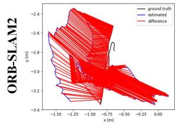
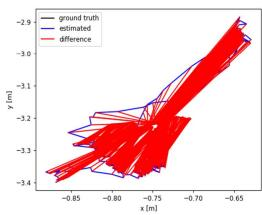
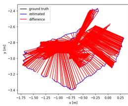
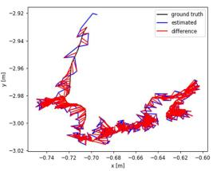
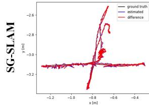
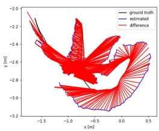
(a)
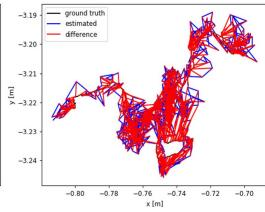
(b)
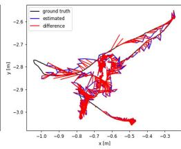
(c)
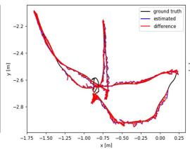
fr3/walking_halfsphere
(d)
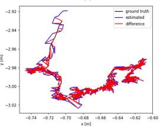
(e)
Fig. 3. ATE results of SG-SLAM and ORB-SLAM2 running five sequences. (a) fr3/walking_xyz. (b) fr3/walking_static. (c) fr3/walking_rpy. (d) fr3/walking_halfsphere. (e) fr3/sitting_static.
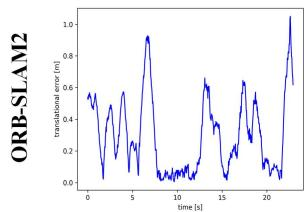
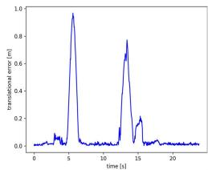
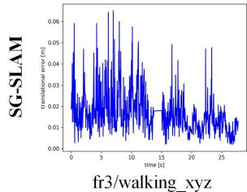
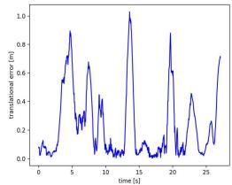
(a)
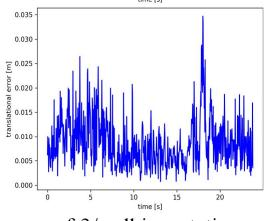
(b)
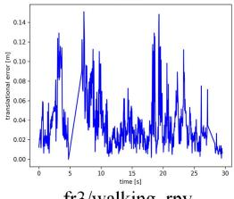
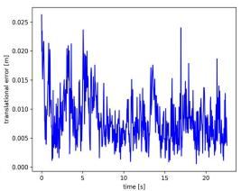
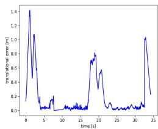
(c)
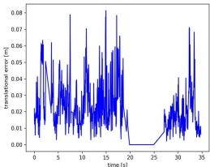
(d)
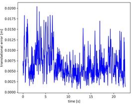
(e)
Fig. 4. RPE results of SG-SLAM and ORB-SLAM2 running five sequences. (a) fr3/walking_xyz. (b) fr3/walking_static. (c) fr3/walking_rpy. (d) fr3/walking_halfsphere. (e) fr3/sitting_static.
To further evaluate the effectiveness of the proposed algorithm, it continues to be compared with M-removal DVO [22], RDS-SLAM [26], ORB-SLAM3 [36], and other similar algorithms. The results are shown in Table IV. Although the DynaSLAM system using pixel-level semantic segmentation achieves a slight lead in individual sequence results, its real-time performance is weak (as shown in Table VII). All other methods have difficulty in achieving the highest accuracy of experimental results because of certain shortcomings described in Section II. Overall, from the experimental results, it can be concluded that SG-SLAM achieves a state-of-the-art level in terms of average accuracy improvement for all sequences.
B. Performance Evaluation on Bonn RGB-D Dataset
The Bonn RGB-D Dynamic Dataset [37] is a dataset with 24 dynamic sequences for the evaluation of RGB-D
SLAM provided by Bonn University in 2019. To validate the generalization performance of the dynamic feature rejection algorithm, we performed another experimental evaluation using this dataset.
The experiment mainly selected nine representative sequences in the dataset. Among them, the “crowd” sequences are the scenes of three people walking randomly in the room. The “moving no box” sequences show a person moving a box from the floor to a desk. The “person tracking” sequences are scenes where the camera is tracking a walking person. The “synchronous” sequences present scenes of several people jumping together in the same direction over and over again. In order to evaluate the accuracy performance of our system, it is mainly compared with the original ORB-SLAM2 system and the current state-of-the-art YOLO-SLAM system.
The evaluation comparison results in the nine dynamic scene sequences are shown in Table V. Only in the two “synchronization” sequences, SG-SLAM does not perform as well as YOLO-SLAM. The main reason is that the human jump direction in the scene is similar to the polar line direction leading to different degrees of degeneration of the algorithm [16]. The results in Table V show that our algorithm outperforms other algorithms in most sequences. Not only does this once again prove that the SG-SLAM system achieves state-of-the-art accuracy and robustness in dynamic scenes but also proves its generalizability.
SG-SLAM(S)
TABLE IV
RESULTS OF METRIC ATE
| Seq. | YOLO-SLAM | DS-SLAM | DynaSLAM (N+G) | YOLACT based SLAM | RDS-SLAM | M-removal DVO | ORB-SLAM3 | SG-SLAM (Ours) | ||||||||
| RMSE | S.D. | RMSE | S.D. | RMSE | S.D. | RMSE | S.D | RMSE | S.D. | RMSE | S.D. | RMSE | S.D. | RMSE | S.D. | |
| w_xyz | 0.0146 | 0.0070 | 0.0247 | 0.0161 | 0.015 | 0.017 | 0.0571 | 0.0229 | 0.0657 | 0.0354 | 0.9178 | 0.4859 | 0.0152 | 0.0075 | ||
| w_static | 0.0073 | 0.0035 | 0.0081 | 0.0036 | 0.006 | 0.009 | 0.0206 | 0.0120 | 0.0334 | 0.0207 | 0.3614 | 0.1522 | 0.0073 | 0.0034 | ||
| w_rpy | 0.2164 | 0.1001 | 0.4442 | 0.2350 | 0.035 | 0.038 | 0.1604 | 0.0873 | 0.0729 | 0.0335 | 1.0197 | 0.5122 | 0.0324 | 0.0187 | ||
| w_half | 0.0283 | 0.0138 | 0.0303 | 0.0159 | 0.025 | 0.026 | 0.0807 | 0.0454 | 0.0668 | 0.0266 | 0.6572 | 0.3124 | 0.0268 | 0.0134 | ||
| s static | 0.0066 | 0.0033 | 0.0065 | 0.0033 | 0.006 | 0.0084 | 0.0043 | 0.0090 | 0.0043 | 0.0060 | 0.0029 | |||||
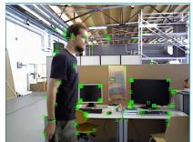
ORB-SLAM2
(a)

SG-SLAM(G)
(b)
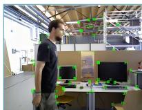
SG-SLAM(G)
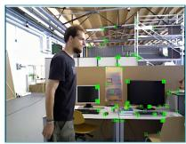
(c)
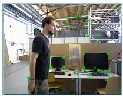
(d)
(e)
Fig. 5. Dynamic feature rejection effect demonstration. The empirical threshold ε in (b) is 0.2 and in (c) is 1.0. (a) ORB-SLAM2. (b) and (c) SG-SLAM (G). (d) SG-SLAM (S). (e) SG-SLAM (S G).
C. Effectiveness of Dynamic Feature Rejection Strategy
SG-SLAM combines geometrical and semantic information to reject dynamic features, drawing on the advantages and avoiding the disadvantages of both methods. To validate the effectiveness of the fusion of geometric and semantic information algorithms, we designed comparative experiments. Fig. 5 shows the experimental results of these methods for detecting dynamic points. First, SG-SLAM (S) denotes a semantic information-only algorithm to reject dynamic feature points. Next, SG-SLAM (G) is only the geometry algorithm based on the epipolar constraint. Finally, SG-SLAM (S G) uses a fusion algorithm based on geometric and semantic information. The experimental results are shown in Table VI.
Fig. 5(a) shows the results of ORB-SLAM2 extracting feature points: essentially no dynamic regions are processed. Fig. 5(b) and (c) shows the results of using only the epipolar constraint method at different empirical thresholds. At the low threshold [see Fig. 5(b)], many static feature points are misdetected and rejected (e.g., feature points at the corners of the TV monitor); at the high threshold [see Fig. 5(c)], some dynamic feature points on walking people are missed. Next, Fig. 5(d) shows the results of feature point extraction using only the semantic information method: all feature points around the human body are brutally rejected. Finally, the experimental results of the SG-SLAM system combining semantic and geometric information are shown in Fig. 5(e). SG-SLAM rejects all feature points on the human body and retains as many static feature points outside the human body as possible, and the rejection effect is better than the first two algorithms. The experimental results of the two algorithms based on separate information are mutually superior and inferior in different sequences. The algorithm combining both pieces of information shows the most accurate experimental results in all sequences. From the results in Table VI, the experimental data of each algorithm match the intuitive rejection effect in Fig. 5. This proves the effectiveness of the fusion of geometric and semantic information algorithms.
D. Timing Analysis
As the basic component of robot state estimation, the speed of SLAM directly affects the smooth execution of higher level tasks. Thus, we tested the average time cost of processing each frame when the system is running and compared it with other systems.
The experimental time-consuming results and hardware platforms are shown in Table VII. Since systems, such as DS-SLAM, DynaSLAM, and YOLACT-based SLAM, use pixel-level semantic segmentation networks, their average time cost per frame is expensive. YOLO-SLAM uses the end-to-end YOLO fast object detection algorithm, but it is very slow due to limitations such as system architecture optimization and hardware performance. The SG-SLAM system significantly increases frame processing speed by using multithreading, SSD object detection algorithms, and data multiplexing mechanisms. Compared to ORB-SLAM2, our work increases the average processing time per frame by less than 10 ms, which can meet the real-time performance requirements of mobile robots.
E. Semantic Mapping
To show the actual semantic mapping effect, the SG-SLAM system conducts mapping experiments in the TUM RGB-D dataset and the OpenLORIS-Scene dataset [38]. OpenLORIS-Scene is a dataset of data recorded by robots in real scenes using a motion capture system to obtain real trajectories. This dataset is intended to help evaluate the maturity of SLAM and scene understanding algorithms in real deployments.
TABLE V
RESULTS OF METRIC ATE
| Sequences | ORB-SLAM2 | YOLO-SLAM | SG-SLAM (Ours) | |||||||||
| RMSE | Mean | Median | S.D. | RMSE | Mean | Median | S.D. | RMSE | Mean | Median | S.D. | |
| crowd1 | 0.8632 | 0.6284 | 0.3592 | 0.5918 | 0.033 | 0.0234 | 0.0185 | 0.0161 | 0.0143 | |||
| crowd2 | 1.3573 | 1.2071 | 1.1163 | 0.6207 | 0.423 | 0.0584 | 0.0420 | 0.0301 | 0.0406 | |||
| crowd3 | 1.0772 | 1.0070 | 0.9733 | 0.3823 | 0.069 | 0.0319 | 0.0231 | 0.0187 | 0.0219 | |||
| moving_no_box1 | 0.1174 | 0.0935 | 0.0785 | 0.0710 | 0.027 | 0.0192 | 0.0174 | 0.0156 | 0.0081 | |||
| moving_no_box2 | 0.1142 | 0.0973 | 0.0955 | 0.0598 | 0.035 | 0.0299 | 0.0275 | 0.0261 | 0.0119 | |||
| person_tracking1 | 0.7959 | 0.7090 | 0.7410 | 0.3617 | 0.157 | 0.0400 | 0.0375 | 0.0380 | 0.0139 | |||
| person_tracking2 | 1.0679 | 0.9590 | 0.8732 | 0.4699 | 0.037 | 0.0376 | 0.0343 | 0.0312 | 0.0154 | |||
| synchronous1 | 1.1411 | 0.9884 | 0.9179 | 0.5703 | 0.014 | 0.3229 | 0.2665 | 0.1722 | 0.1824 | |||
| synchronous2 | 1.4069 | 1.3201 | 1.3259 | 0.4864 | 0.007 | 0.0164 | 0.0105 | 0.0073 | 0.0126 | |||
TABLE VI
RESULTS OF METRIC ATE
| Sequences | SG-SLAM (S) | SG-SLAM (G) | SG-SLAM (S+G) | |||||||||
| RMSE | Mean | Median | S.D. | RMSE | Mean | Median | S.D. | RMSE | Mean | Median | S.D. | |
| fr3_walking_xyz | 0.0171 | 0.0144 | 0.0124 | 0.0092 | 0.1497 | 0.1323 | 0.1152 | 0.0702 | 0.0152 | 0.0132 | 0.0118 | 0.0075 |
| fr3_walking_static | 0.0139 | 0.0088 | 0.0065 | 0.0108 | 0.0153 | 0.0099 | 0.0077 | 0.0118 | 0.0073 | 0.0065 | 0.0059 | 0.0034 |
| fr3_walking_rpy | 0.0381 | 0.0255 | 0.0190 | 0.0283 | 0.2757 | 0.1830 | 0.1021 | 0.2061 | 0.0324 | 0.0264 | 0.0215 | 0.0187 |
| fr3_walking_half | 0.0811 | 0.0766 | 0.0762 | 0.0268 | 0.0448 | 0.0342 | 0.0281 | 0.0290 | 0.0268 | 0.0232 | 0.0203 | 0.0134 |
| fr3 sitting static | 0.0084 | 0.0071 | 0.0059 | 0.0045 | 0.0094 | 0.0084 | 0.0076 | 0.0043 | 0.0060 | 0.0053 | 0.0047 | 0.0029 |
TABLE VII
TIME ANALYSIS
| Systems | Average Processing Time Per Frame (ms) | Hardware Platform |
| ORB-SLAM2 | 59.26 | Nvidia Jetson AGX Xavier Developer Kit |
| SG-SLAM (Ours) | 65.71 | Nvidia Jetson AGX Xavier Developer Kit |
| ORB-SLAM2 | 30.04 | AMD Ryzen 7 4800H, Nvidia GTX 1650 |
| SG-SLAM (Ours) | 39.51 | AMD Ryzen 7 4800H, Nvidia GTX 1650 |
| YOLO-SLAM | 696.09 | Intel Core i5-4228U CPU |
| DS-SLAM | 59.40 | Intel i7 CPU, P4000 GPU |
| DynaSLAM | 192.00 (at least) | Nvidia Tesla M40 GPU |
| YOLACT based SLAM | 58.80 | i7-9700K CPU, Nvidia RTX 2080, 48GB RAM |
| RDS-SLAM | 57.50 | Nvidia RTX 2080Ti GPU |
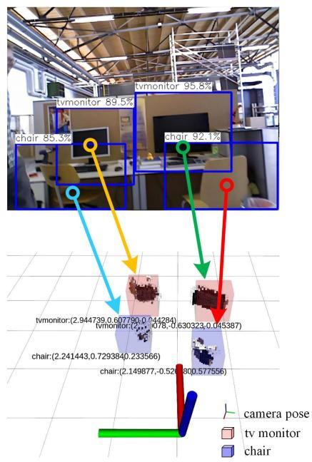
Fig. 6. Semantic object map for fr3_walking_xyz sequence.
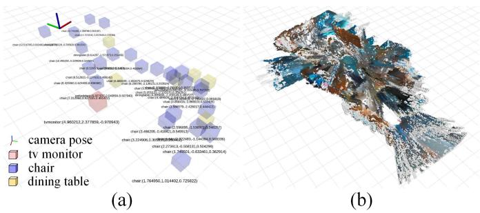
Fig. 7. (a) Semantic object map and (b) global octo-map for the cafe1-2 sequence of the OpenLORIS-Scene dataset.
Fig. 6 shows the semantic object mapping effect of SG-SLAM in the fr3_walking_xyz sequence of the TUM RGB-D dataset. Fig. 7(a) and (b) shows the semantic object map and the global Octo-map built in the cafe1-2 sequence of the OpenLORIS-Scene dataset, respectively. The coordinates of the objects shown in the map are transformed from the origin point where the SLAM system is running. The semantic metric map and the global Octo-map not only enable mobile robots to navigate and avoid obstacles but also enable them to understand scenes at a higher level and perform advanced tasks.
V. CONCLUSION
This article presents a real-time semantic visual SG-SLAM toward dynamic scenes with an RGB-D camera input. SG-SLAM adds two new threads based on ORB-SLAM2: the object detecting thread and the semantic mapping thread. The system significantly improves real time, accuracy, and robustness in dynamic scenes with the dynamic feature rejection algorithm. The semantic mapping thread reuses the 2-D semantic information to build the semantic object map with object coordinates and the global Octo-map. Experiments prove that improved traditional algorithms can achieve superior performance when introducing deep learning and coupled with proper engineering implementations.
There are still some disadvantages of the system that need to be addressed in the future. For example, the degeneration problem of dynamic objects moving along the polar line direction can cause the dynamic feature rejection algorithm to fail, semantic metric map improvement in precision, experimental quantitative analysis, and so on.
REFERENCES
[1] H. Durrant-Whyte and T. Bailey, “Simultaneous localization and mapping: Part I,” IEEE Robot. Autom. Mag., vol. 13, no. 2, pp. 99–110, Jun. 2006.
[2] S. Shirmohammadi and A. Ferrero, “Camera as the instrument: The rising trend of vision based measurement,” IEEE Instrum. Meas. Mag., vol. 17, no. 3, pp. 41–47, Jun. 2014.
[3] G. Klein and D. Murray, “Parallel tracking and mapping for small AR workspaces,” in Proc. 6th IEEE ACM Int. Symp. Mixed Augmented Reality, Nov. 2007, pp. 225–234.
[4] R. Mur-Artal and J. D. Tardós, “ORB-SLAM2: An open-source slam system for monocular, stereo, and RGB-D cameras,” IEEE Trans. Robot., vol. 33, no. 5, pp. 1255–1262, Oct. 2017.
[5] C. Kerl, J. Sturm, and D. Cremers, “Dense visual SLAM for RGB-D cameras,” in Proc. IEEE/RSJ Int. Conf. Intell. Robots Syst., Nov. 2013, pp. 2100–2106.
[6] A. Rosinol, M. Abate, Y. Chang, and L. Carlone, “Kimera: An opensource library for real-time metric-semantic localization and mapping,” in Proc. IEEE Int. Conf. Robot. Autom. (ICRA), May 2020, pp. 1689–1696.
[7] C. Cadena et al., “Past, present, and future of simultaneous localization and mapping: Toward the robust-perception age,” IEEE Trans. Robot., vol. 32, no. 6, pp. 1309–1332, Dec. 2016.
[8] I. Kostavelis and A. Gasteratos, “Semantic mapping for mobile robotics tasks: A survey,” Robot. Auton. Syst., vol. 66, pp. 86–103, Apr. 2015.
[9] B. Bescos, J. M. Fácil, J. Civera, and J. L. Neira, “DynaSLAM: Tracking, mapping, and inpainting in dynamic scenes,” IEEE Robot. Autom. Lett., vol. 3, no. 4, pp. 4076–4083, Oct. 2018.
[10] C. Yu et al., “DS-SLAM: A semantic visual SLAM towards dynamic environments,” in Proc. IEEE/RSJ Int. Conf. Intell. Robots Syst. (IROS), Oct. 2018, pp. 1168–1174.
[11] W. Wu, L. Guo, H. Gao, Z. You, Y. Liu, and Z. Chen, “YOLO-SLAM: A semantic SLAM system towards dynamic environment with geometric constraint,” Neural Comput. Appl., vol. 34, pp. 1–16, Apr. 2022.
[12] J. Chang, N. Dong, and D. Li, “A real-time dynamic object segmentation framework for SLAM system in dynamic scenes,” IEEE Trans. Instrum. Meas., vol. 70, pp. 1–9, 2021.
[13] M. Quigley et al., “ROS: An open-source robot operating system,” in Proc. ICRA Workshop Open Source Softw., Kobe, Japan, 2009, vol. 3, no. 3, p. 5.
[14] Tencent. (2017). NCNN. [Online]. Available: https://github.com/Tencent/ ncnn
[15] A. Hornung, K. M. Wurm, M. Bennewitz, C. Stachniss, and W. Burgard, “OctoMap: An efficient probabilistic 3D mapping framework based on octrees,” Auton. Robot., vol. 34, no. 3, pp. 189–206, 2013.
[16] A. Kundu, K. M. Krishna, and J. Sivaswamy, “Moving object detection by multi-view geometric techniques from a single camera mounted robot,” in Proc. IEEE/RSJ Int. Conf. Intell. Robots Syst., Oct. 2009, pp. 4306–4312.
[17] R. Hartley and A. Zisserman, Multiple View Geometry in Computer Vision. Cambridge, U.K.: Cambridge Univ. Press, 2003.
[18] M. A. Fischler and R. Bolles, “Random sample consensus: A paradigm for model fitting with applications to image analysis and automated cartography,” Commun. ACM, vol. 24, no. 6, pp. 381–395, 1981.
[19] M. Piaggio, R. Fornaro, A. Piombo, L. Sanna, and R. Zaccaria, “An optical-flow person following behaviour,” in Proc. IEEE Int. Symp. Intell. Control (ISIC), IEEE Int. Symp. Comput. Intell. Robot. Autom. (CIRA), Intell. Syst. Semiotics (ISAS), 1998, pp. 301–306.
[20] D. Nguyen, C. Hughes, and J. Horgan, “Optical flow-based movingstatic separation in driving assistance systems,” in Proc. IEEE 18th Int. Conf. Intell. Transp. Syst., Sep. 2015, pp. 1644–1651.
[21] T. Zhang, H. Zhang, Y. Li, Y. Nakamura, and L. Zhang, “Flow-Fusion: Dynamic dense RGB-D SLAM based on optical flow,” in Proc. IEEE Int. Conf. Robot. Autom. (ICRA), May 2020, pp. 7322–7328.
[22] Y. Sun, M. Liu, and M. Q.-H. Meng, “Motion removal for reliable RGB-D SLAM in dynamic environments,” Robot. Auton. Syst., vol. 108, pp. 115–128, Oct. 2018.
[23] L. Zhang, L. Wei, P. Shen, W. Wei, G. Zhu, and J. Song, “Semantic SLAM based on object detection and improved octomap,” IEEE Access, vol. 6, pp. 75545–75559, 2018.
[24] J. Redmon and A. Farhadi, “YOLO9000: Better, faster, stronger,” in Proc. IEEE Conf. Comput. Vis. Pattern Recognit. (CVPR), Jul. 2017, pp. 7263–7271.
[25] L. Xiao, J. Wang, X. Qiu, Z. Rong, and X. Zou, “Dynamic-SLAM: Semantic monocular visual localization and mapping based on deep learning in dynamic environment,” Robot. Auton. Syst., vol. 117, pp. 1–16, Jul. 2019.
[26] Y. Liu and J. Miura, “RDS-SLAM: Real-time dynamic SLAM using semantic segmentation methods,” IEEE Access, vol. 9, pp. 23772–23785, 2021.
[27] K. He, G. Gkioxari, P. Dollár, and R. Girshick, “Mask R-CNN,” in Proc. ICCV, Jun. 2017, pp. 2961–2969.
[28] V. Badrinarayanan, A. Kendall, and R. Cipolla, “SegNet: A deep convolutional encoder–decoder architecture for image segmentation,” IEEE Trans. Pattern Anal. Mach. Intell., vol. 39, no. 12, pp. 2481–2495, Jan. 2017.
[29] Ó. M. Mozos, R. Triebel, P. Jensfelt, A. Rottmann, and W. Burgard, “Supervised semantic labeling of places using information extracted from sensor data,” Robot. Auto. Syst., vol. 55, no. 5, pp. 391–402, May 2007.
[30] C. Nieto-Granda, J. G. Rogers, A. J. B. Trevor, and H. I. Christensen, “Semantic map partitioning in indoor environments using regional analysis,” in Proc. IEEE/RSJ Int. Conf. Intell. Robots Syst., Oct. 2010, pp. 1451–1456.
[31] N. Sunderhauf, T. T. Pham, Y. Latif, M. Milford, and I. Reid, “Meaningful maps with object-oriented semantic mapping,” in Proc. IEEE/RSJ Int. Conf. Intell. Robots Syst. (IROS), Sep. 2017, pp. 5079–5085.
[32] W. Liu et al., “SSD: Single shot MultiBox detector,” in Proc. Eur. Conf. Comput. Vis. Cham, Switzerland: Springer, 2016, pp. 21–37.
[33] A. Howard et al., “Searching for MobileNetV3,” in Proc. IEEE/CVF Int. Conf. Comput. Vis., Oct. 2019, pp. 1314–1324.
[34] M. Everingham, L. Van Gool, C. Williams, J. Winn, and A. Zisserman, “The PASCAL visual object classes challenge 2007 results,” 2008. [Online]. Available: http://www.pascal-network.org/ challenges/VOC/voc2007/workshop/index.html
[35] J. Sturm, N. Engelhard, F. Endres, W. Burgard, and D. Cremers, “A benchmark for the evaluation of RGB-D SLAM systems,” in Proc. IEEE/RSJ Int. Conf. Intell. Robots Syst., Oct. 2012, pp. 573–580.
[36] C. Campos, R. Elvira, J. J. G. Rodriguez, J. M. M. Montiel, and J. D. Tardos, “ORB-SLAM3: An accurate open-source library for visual, visual–inertial, and multimap SLAM,” IEEE Trans. Robot., vol. 37, no. 6, pp. 1874–1890, Dec. 2021.
[37] E. Palazzolo, J. Behley, P. Lottes, P. Giguere, and C. Stachniss, “ReFusion: 3D reconstruction in dynamic environments for RGB-D cameras exploiting residuals,” in Proc. IEEE/RSJ Int. Conf. Intell. Robots Syst. (IROS), Nov. 2019, pp. 7855–7862.
[38] X. Shi et al., “Are we ready for service robots? The OpenLORIS-scene datasets for lifelong SLAM,” in Proc. IEEE Int. Conf. Robot. Autom. (ICRA), May 2020, pp. 3139–3145.
Shuhong Cheng was born in Daqing, Heilongjiang, China, in 1978. She received the B.S., M.S., and Ph.D. degrees from Yanshan University, Qinhuangdao, China, in 2001, 2007, and 2012, respectively.
She studied as a Visiting Scholar at the University of Reading, Reading, U.K., in 2014. After her Ph.D. degree, she has been working as a Professor at Yanshan University since 2019. She has published about 50 papers in journals and international conferences and eight computer software copyrights. She has been granted more than four Chinese invention
patents. Since 2012, she has presided over and undertaken more than ten national projects. Her current research interests are in rehabilitation robots, assisting robot for the disabled, and the elderly and computer vision.
Shijun Zhang (Student Member, IEEE) was born in Lianyungang, China, in 1993. He received the bachelor’s and master’s degrees in control engineering from Yanshan University, Qinhuangdao, China, in 2016 and 2019, respectively, where he is currently pursuing the Ph.D. degree in mechanical engineering.
His main research directions include mobile robot control and perception, computer vision, and deep learning.
Changhe Sun was born in Tangshan, China, in 1996. He received the bachelor’s degree in communication engineering from the Chongqing University of Technology, Chongqing, China, in 2019. He is currently pursuing the master’s degree with the School of Electrical Engineering, Yanshan University, Qinhuangdao, China.
His main research interests include simultaneous localization and mapping (SLAM), computer vision, and robotics.
Dianfan Zhang was born in Jilin, China, in 1978. He received the bachelor’s and master’s degrees in control engineering and the Ph.D. degree from Yanshan University, Qinhuangdao, China, in 2001, 2006, and 2010, respectively.
His main research directions include mobile robot control and signal processing.
md/2023_SG-SLAM__A_Real-Time_RGB-D_Visual_SLAM_Toward_Dynamic_Sc.md 预渲染生成。公式以 MathML 呈现，浏览器原生渲染，不依赖外部脚本或字体 CDN。